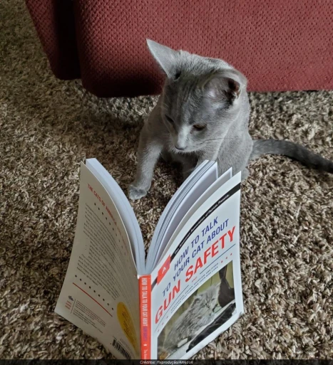

Você deve estar se perguntando se esse livro realmente existe, infelizmente tenho que te informar… É apenas uma montagem que virou meme. A origem dessa edição e o intuito ainda são um mistério, mas segundo uma pesquisa do site e-farsas, o que se sabe é que a arte veio do livro “Enjoy your shit-assed little bark machine” ou traduzido para o português “Aproveite sua pequena máquina de latido de merda”.
Existe uma probabilidade do meme ter surgido de inspiração a partir do livro lançado em 2015 “How to Talk to Your Cat About Gun Safety: And Abstinence, Drugs, Satanism, and Other Dangers That Threaten Their Nine Lives” ou em nosso idioma “Como falar com seu gato sobre a segurança das armas: abstinência, drogas, satanismo e outros perigos que ameaçam suas nove vidas”. Conforme o site goodreads.com, famoso por resenhas de livros, a obra é um idealismo conservador, em que o gato, na verdade, é uma alusão às crianças. Mas, calma… Nada disso passa de uma paródia ou ficção ultraconservadora.